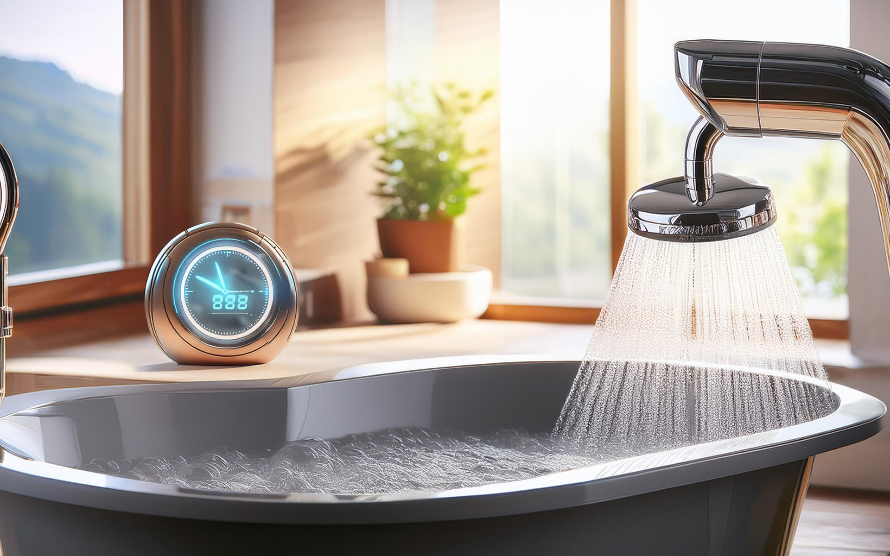
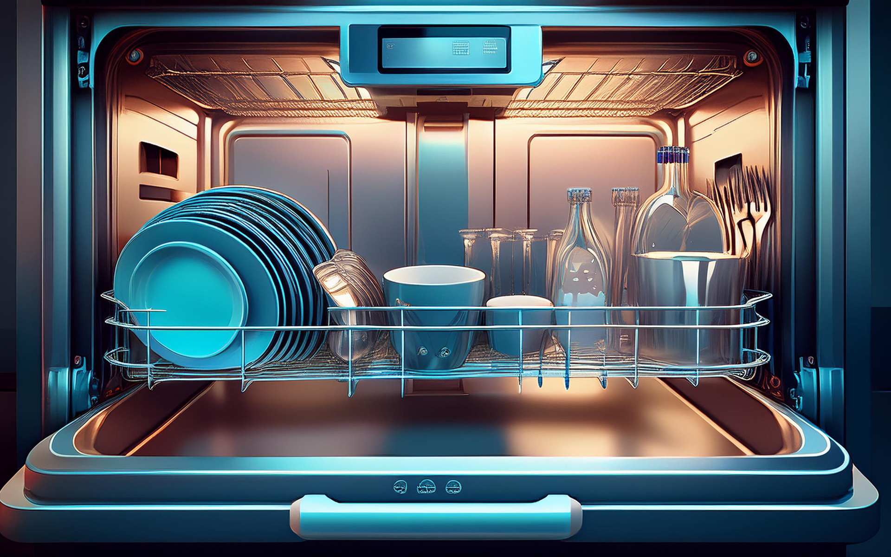
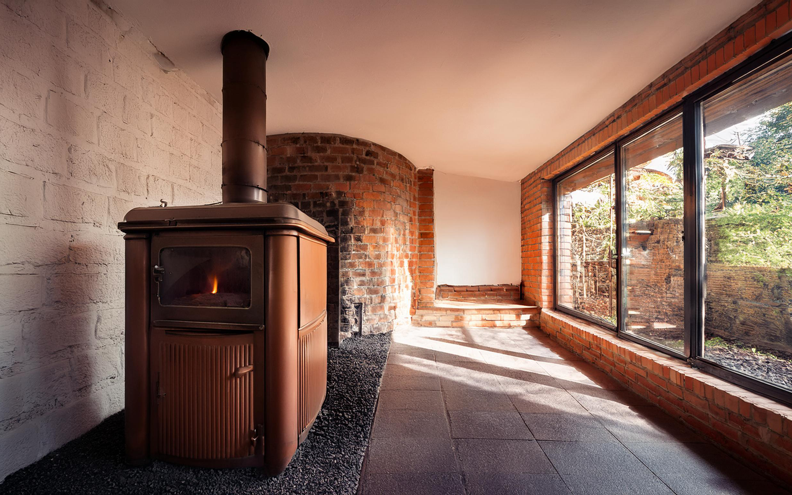

Control all your automated features seamlessly from one central hub. Enjoy easy management of lighting, security, climate, and entertainment. Elevate your living experience

Streamline your smart home experience with our innovative memory tapes that capture and store your commands. Easily recall preferences and automate routines at the touch of a button.

Experience peace of mind with advanced safety features, including password protection and voice recognition. Easily control access for family and friends while keeping intruders out.

Experience effortless control over light and privacy, along with energy efficiency and stylish designs. Say goodbye to manual operation and enhance your lifestyle!
Stay on top of your schedule with a clock that not only tells time but also reminds and talks to you. Enjoy personalized alerts for appointments, tasks, and more, all in a friendly voice.

Enjoy perfectly cooked meals at the touch of a button. Our automated stove prepares your breakfast while you relax, ensuring delicious results every time. Elevate your mornings

Keep an eye on the elements with our innovative weather box that displays real-time weather updates. Easily track temperature, humidity, and forecasts right from your home.

Enjoy convenient, secure access with a push of a button. Say goodbye to manual operation amd elevate your lifestyle!

Transform your patio into an entertainment hub with our automated table that effortlessly brings up games like playing cards at the touch of a button.

Enjoy cozy nights with the touch of a button, adjusting your bed’s temperature for ultimate comfort. Say goodbye to cold sheets and elevate your sleep experience!
Enjoy luxury at the touch of a button with customization temperature, water levels, and spa-like jets. Elevate your routine!

Keep your plants healthy and thriving with our automated garden sprinklers. Set schedules and adjust settings effortlessly for optimal watering, ensuring your garden receives the right amount of hydration.
Experience effortless clean-up with our automated dishwasher that takes the hassle out of washing dishes. Enjoy advanced settings for sparkling results, energy efficiency, and time savings all at the touch of a button.

Effortlessly keep your home tidy with this cute and efficient robot mouse. It scurries around, picking up dust and crumbs, so you can enjoy a cleaner space without lifting a finger. Simplify your cleaning routine!
Simplify your cleanup with our automated incinerator that efficiently disposes of organic waste. With smart technology for safe operation, it transforms scraps into ash, reducing clutter and odors.

Say goodbye to food scraps cluttering your space! This clever robot rat scurries around, collecting leftovers and transporting them to the incinerator.